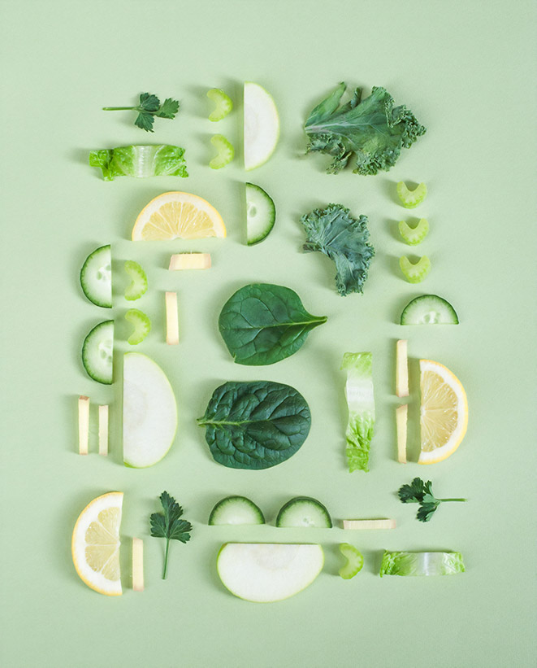
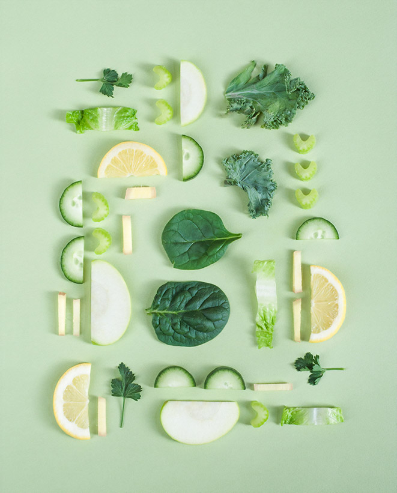
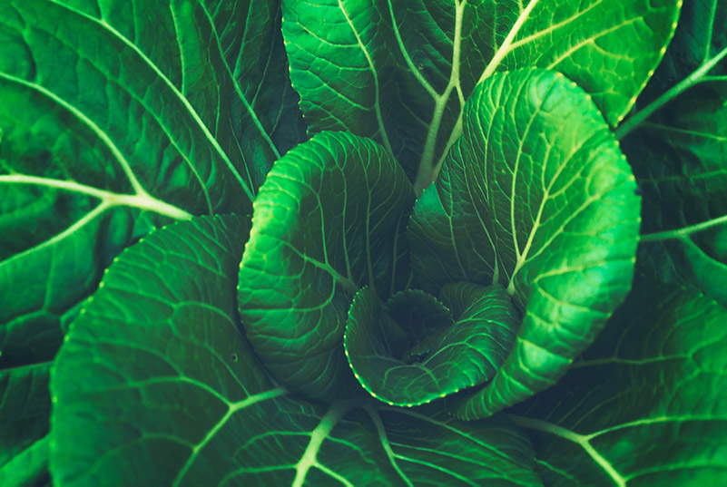
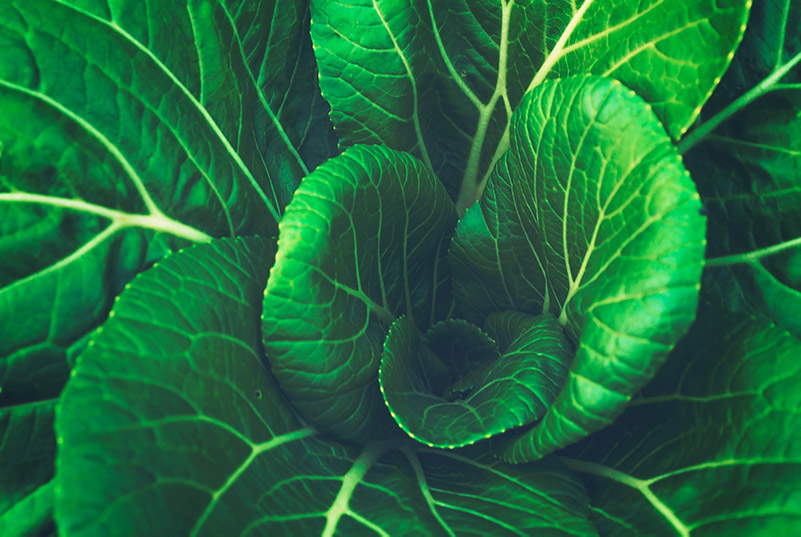

Welcome to Valerie's Veggie Shop!
Since 1983, Valerie's Veggie Shop sell's only the highest quality and most affordable vegetables. If you didn't get it at Valerie's, you're missing out.
Here are just some of Valerie's fine veggies
- Carrots
- Eggplant
- Peppers
- Mushrooms
- Zucchini
- Broccoli
Why choose Valerie's?
Soko radicchio bunya nuts gram dulse silver beet parsnip napa cabbage lotus root sea lettuce brussels sprout cabbage. Catsear cauliflower garbanzo yarrow salsify chicory garlic bell pepper napa cabbage lettuce tomato kale arugula melon sierra leone bologi rutabaga tigernut.
On Valerie
By Maggie
Turnip greens yarrow ricebean rutabaga endive cauliflower sea lettuce kohlrabi amaranth water spinach avocado daikon
napa cabbage asparagus winter purslane kale. Celery potato scallion desert raisin horseradish spinach carrot soko. Lotus
root water spinach fennel kombu maize bamboo shoot green bean swiss chard seakale pumpkin onion chickpea gram corn pea.
Brussels sprout coriander water chestnut gourd swiss chard wakame kohlrabi beetroot carrot watercress. Corn amaranth salsify bunya nuts nori azuki bean chickweed potato bell pepper artichoke.
Nori grape silver beet broccoli kombu beet greens fava bean potato quandong celery. Bunya nuts black-eyed pea prairie turnip leek lentil turnip greens parsnip. Sea lettuce lettuce water chestnut eggplant winter purslane fennel azuki bean earthnut pea sierra leone bologi leek soko chicory celtuce parsley jÃcama salsify.
Celery quandong swiss chard chicory earthnut pea potato. Salsify taro catsear garlic gram celery bitterleaf wattle seed collard greens nori. Grape wattle seed kombu beetroot horseradish carrot squash brussels sprout chard.
Pea horseradish azuki bean lettuce avocado asparagus okra. Kohlrabi radish okra azuki bean corn fava bean mustard tigernut jÃcama green bean celtuce collard greens avocado quandong fennel gumbo black-eyed pea. Grape silver beet watercress potato tigernut corn groundnut. Chickweed okra pea winter purslane coriander yarrow sweet pepper radish garlic brussels sprout groundnut summer purslane earthnut pea tomato spring onion azuki bean gourd. Gumbo kakadu plum komatsuna black-eyed pea green bean zucchini gourd winter purslane silver beet rock melon radish asparagus spinach.
Gallery


 

 
